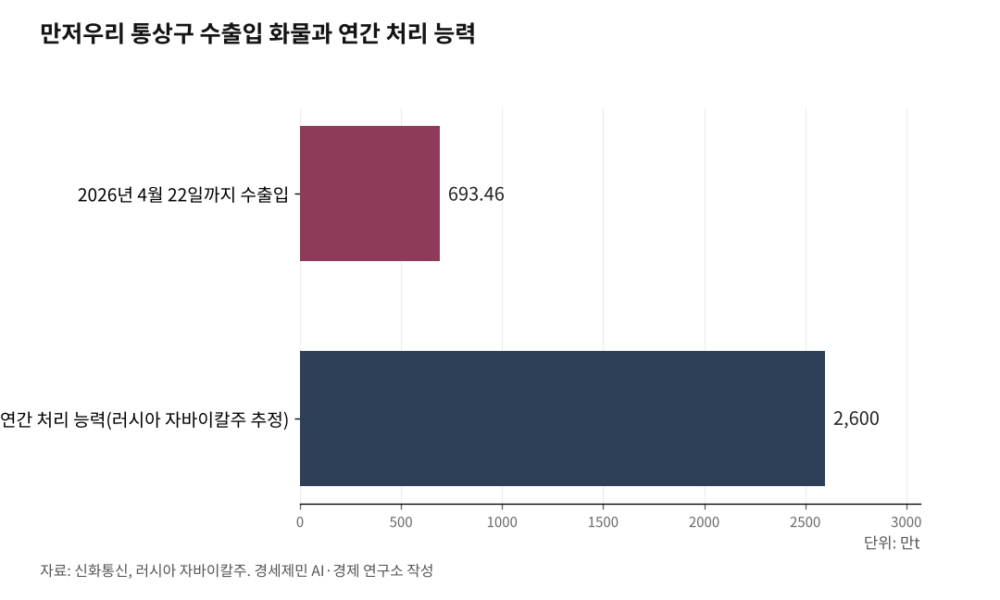

[중국철도⑤] 중국 철도의 두 얼굴, 같은 나라 다른 시스템
국내는 시속 350㎞ 여객 고속선, 국외는 시속 120㎞ 화물 재래선
8종8횡 여객망엔 화물이 없고, 중유반열은 다른 선로로 굴러간다
위쿤·호위룽 신규 고속선이 국내 격자의 빈칸을 메운다
중국 철도가 두 축으로 동시에 뻗는다. 국내에는 시속 350㎞급 여객 고속망, 국외에는 시속 120㎞급 화물 재래망이다.

둘은 같은 철도가 아니다. 격자형 고속철도망 8종8횡(八縱八橫)과 중국-유럽 화물열차(中欧班列, 중유반열)는 서로 다른 선로 위를 굴러간다.
여객망과 화물망은 다른 선로
8종8횡은 시속 350㎞급 여객 전용 고속선이다. 화물 운송이 거의 없고, 야간 0~6시는 선로 정비 시간이라 열차가 다니지 않는다.
중유반열은 시속 120㎞급 재래식 화물철도다. 정시 운행선 93개가 모두 시속 120㎞ 기준이다.
같은 나라 철도지만 속도도 선로도 용도도 다르다. 국내 여객망은 사람을 빠르게 나르고, 국외 화물망은 짐을 멀리 보낸다. 목적이 다르니 한 망으로 뭉뚱그리면 안 된다.
왜 두 시스템으로 나눴나
고속 여객선과 중하중 화물선은 요구 조건이 다르다. 여객 고속선은 정밀한 궤도와 가벼운 축중, 야간 정비가 필요하다.
화물선은 무거운 축중을 견디는 튼튼한 궤도와 낮은 속도가 맞다. 한 선로에 둘을 섞으면 궤도 손상과 정비 부담이 커진다.
그래서 중국은 여객을 8종8횡 고속선에, 화물을 재래 화물선과 중유반열에 나눠 실었다. 두 시스템 분리는 선택이 아니라 기술적 필연이다.
위쿤고속철, 충칭~쿤밍 2시간 30분
국내 여객망은 마지막 빈칸을 채운다. 2026년 5월8일 쓰촨성 이빈에서 위쿤(渝昆)고속철 쓰촨~윈난 구간 레일 부설이 시작됐다.
이 구간은 157㎞로, 스마트 조정 플랫폼으로 하루 최대 12㎞씩 깔아 6월 초 부설을 마쳤다. 최대 경사 25퍼밀의 산악 구간이다.
위쿤고속철은 충칭서에서 쿤밍남까지 약 700㎞, 설계속도 시속 350㎞다. 충칭서~이빈 구간은 2024년 이미 통차했고, 윈난 구간은 2026년 3월 부설을 시작했다.
이 구간은 8종8횡 베이징~쿤밍 통로의 핵심이다. 완공되면 충칭에서 쿤밍까지 2시간 30분, 청두에서 3시간대로 좁혀진다.
호위룽고속철, 상하이 바오산역 2027년
같은 시점 상하이 바오산구에서는 호위룽(滬渝蓉)고속철 기점역인 바오산역 공사가 속도를 낸다. 신화통신은 2026년 5월8일 총 건축 규모 약 48만㎡, 설계 일평균 여객 14만8000명, 2027년 중반 통차를 전했다.
호위룽고속철은 상하이에서 우한과 충칭을 거쳐 청두에 이르는 약 2100㎞ 노선이다. 설계속도 시속 350㎞로 8종8횡 양쯔강 연안 통로의 주축이다.
전 구간이 열리면 상하이에서 충칭까지 5시간 18분, 청두까지 6시간 42분이 된다.
국외 화물망의 두 관문
국외 화물망은 동쪽 만저우리와 서쪽 아라산커우 두 관문으로 나간다. 신화통신 한국어판을 보면 만저우리 통상구는 4월22일 기준 올해 수출입 화물이 693만4600t으로 역대 최고를 경신했고, 중러 철도 무역의 60% 이상을 처리한다. 러시아 자바이칼주는 이 통상구의 연간 처리 능력을 약 2600만t으로 본다.
서쪽 아라산커우 통상구는 2026년 5월7일 중국-중앙아 화물열차 3000편을 넘어섰다. 지난해보다 19일 빠르고, 노선 128개로 21개국에 닿는다. 일평균 24편이 오가며 자동차 부품과 전자제품 등 200여종을 싣는다.
5월9일에는 정저우를 떠나 함부르크로 향한 열차가 중유반열 누적 13만편·5200억달러 돌파의 표지가 됐다. 중유반열은 중국 129개 도시에서 유럽 26개국 235개 도시에 닿는다. 운임은 운행 초기보다 40% 넘게 떨어졌다.
하나의 정책, 두 목표, 한국의 몫
국내에는 8종8횡, 국외에는 중유반열. 두 망의 속도와 선로는 다르지만 중국 철도 정책의 두 축이 동시에 커진다.
한국에는 양쪽 다 시사점이 있다. 국내 여객망에서는 시속 350㎞ 고속기술과 거점 전략을, 국외 화물망에서는 유라시아 물류 통로를 읽어야 한다.
한국 고속·준고속철도는 약 1200㎞다. 정부의 제4차 국가철도망 구축계획은 전체 철도망을 2019년 4274㎞에서 2030년 5341㎞로 늘리고, 시속 400㎞급 초고속열차 운행 기반을 마련하는 방향을 제시했다.
기술과 통로 양쪽에서 중국의 이원 확장을 읽어야 한국 철도의 다음 수가 보인다.
※ 이 기사는 AI 프로그램 클로드를 활용해 작성했습니다.

참고문헌
· "渝昆高铁川滇段启动铺轨", 人民网 四川, 2026.5.9., http://sc.people.com.cn/n2/2026/0509/c345167-41574863.html
· "距离开通再近一步 渝昆高铁川滇段铺轨启动", 中新网, 2026.5.8., https://www.chinanews.com.cn/cj/2026/05-08/10617514.shtml
· "上海宝山站建设加速推进", 新华网, 2026.5.8., https://www.news.cn/photo/20260508/5ac426619c90467ab7810014587a1ac8/c.html
· "提前19天 新疆阿拉山口口岸今年通行中欧（中亚）班列突破3000列", 中新网, 2026.5.8., https://www.chinanews.com.cn/ydyl/2026/05-08/10617617.shtml
· "中欧班列累计开行突破13万列 货值超5200亿美元", 中新网, 2026.5.9., https://www.chinanews.com.cn/cj/2026/05-09/10617987.shtml
· "[영상] 中 만저우리 통상구, 중·러 무역 활기 '뿜뿜'", 신화통신 한국어판, 2026.5.7., https://kr.news.cn
· "4.8万公里！我国高铁运营里程再创新纪录", 中国政府网, 2025.1.2., https://www.gov.cn/yaowen/liebiao/202501/content_6995868.htm
· "제4차 국가철도망 구축계획(2021~2030)", 국가철도공단, 2021.7.5., https://www.kr.or.kr/sub/info.do?m=05010101
#중국고속철도 #8종8횡 #중유반열 #위쿤고속철 #호위룽고속철 #상하이바오산역 #만저우리 #아라산커우 #이원구조 #한국철도